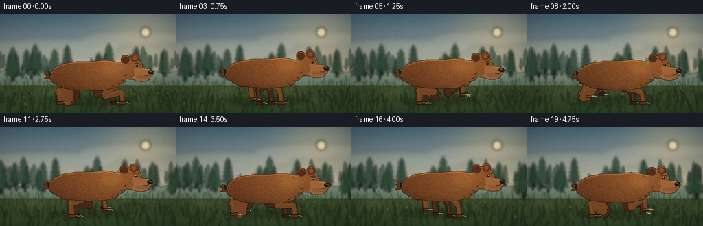
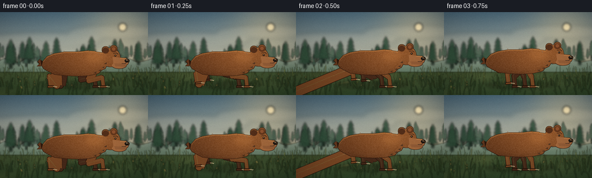
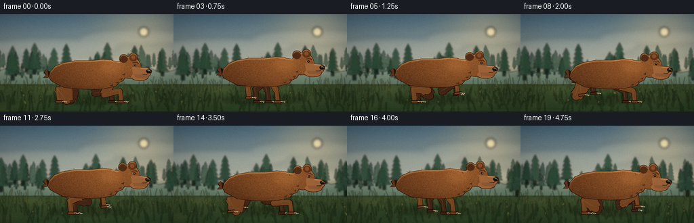

CODING AGENTS AS PIXEL WORLD MODELS
traex/DeepSeek-V4.1-Flash · instance_preservation_0012
点击播放 · 原生 RGB 像素
逐轮保存的候选
回放视频、检查图与代码变化。
每份候选均可单独播放。实际图片检查记录在下方工具轨迹中。
候选 01播放与检查图
点击播放 · 原生 RGB 像素

展开代码变化
--- 上一保存版本
+++ 本次保存版本
@@ -0,0 +1,907 @@
+from __future__ import annotations
+
+import math
+import random
+from pathlib import Path
+
+import numpy as np
+from PIL import Image, ImageChops, ImageDraw, ImageFilter
+
+import artifact_io
+
+
+W, H = 256, 144
+FPS = 4.0
+FRAMES = 20
+SCALE = 4
+CW, CH = W * SCALE, H * SCALE
+TAU = math.tau
+CASE_DIR = Path(__file__).resolve().parent
+
+
+def s(value: float) -> int:
+ return int(round(value * SCALE))
+
+
+def pt(x: float, y: float) -> tuple[int, int]:
+ return s(x), s(y)
+
+
+def rgba(color: tuple[int, int, int], alpha: int = 255) -> tuple[int, int, int, int]:
+ return color[0], color[1], color[2], alpha
+
+
+def lerp(a: float, b: float, t: float) -> float:
+ return a + (b - a) * t
+
+
+def mix_color(a: tuple[int, int, int], b: tuple[int, int, int], t: float) -> tuple[int, int, int]:
+ return tuple(int(round(lerp(a[i], b[i], t))) for i in range(3))
+
+
+def smoothstep(t: float) -> float:
+ t = max(0.0, min(1.0, t))
+ return t * t * (3.0 - 2.0 * t)
+
+
+def vertical_gradient(top: tuple[int, int, int], bottom: tuple[int, int, int]) -> np.ndarray:
+ t = np.linspace(0.0, 1.0, CH, dtype=np.float32)[:, None, None]
+ top_arr = np.asarray(top, dtype=np.float32)[None, None, :]
+ bottom_arr = np.asarray(bottom, dtype=np.float32)[None, None, :]
+ row = top_arr * (1.0 - t) + bottom_arr * t
+ return np.repeat(row, CW, axis=1)
+
+
+def make_mask() -> Image.Image:
+ return Image.new("L", (CW, CH), 0)
+
+
+def polygon_mask(points: list[tuple[float, float]]) -> Image.Image:
+ mask = make_mask()
+ ImageDraw.Draw(mask).polygon([pt(x, y) for x, y in points], fill=255)
+ return mask
+
+
+def ellipse_mask(box: tuple[float, float, float, float]) -> Image.Image:
+ mask = make_mask()
+ ImageDraw.Draw(mask).ellipse(
+ (s(box[0]), s(box[1]), s(box[2]), s(box[3])), fill=255
+ )
+ return mask
+
+
+def union_masks(*masks: Image.Image) -> Image.Image:
+ out = make_mask()
+ for mask in masks:
+ out = ImageChops.lighter(out, mask)
+ return out
+
+
+def offset_mask(mask: Image.Image, dx: int, dy: int) -> Image.Image:
+ out = make_mask()
+ out.paste(mask, (dx, dy))
+ return out
+
+
+def composite_mask(
+ image: Image.Image,
+ mask: Image.Image,
+ color: tuple[int, int, int],
+ alpha: int = 255,
+) -> None:
+ layer = Image.new("RGBA", image.size, rgba(color, alpha))
+ layer.putalpha(mask.point(lambda v: v * alpha // 255))
+ image.alpha_composite(layer)
+
+
+def shaded_shape(
+ mask: Image.Image,
+ top: tuple[int, int, int],
+ bottom: tuple[int, int, int],
+ highlight_center: tuple[float, float] | None = None,
+ highlight_color: tuple[int, int, int] = (190, 124, 67),
+ highlight_strength: float = 0.0,
+ seed: int = 0,
+) -> Image.Image:
+ mask_np = np.asarray(mask, dtype=np.float32) / 255.0
+ yy = np.linspace(0.0, 1.0, CH, dtype=np.float32)[:, None, None]
+ top_arr = np.asarray(top, dtype=np.float32)[None, None, :]
+ bottom_arr = np.asarray(bottom, dtype=np.float32)[None, None, :]
+ colors = np.repeat(top_arr * (1.0 - yy) + bottom_arr * yy, CW, axis=1)
+
+ if highlight_center is not None and highlight_strength > 0:
+ cy, cx = highlight_center[1] * SCALE, highlight_center[0] * SCALE
+ y_idx = np.arange(CH, dtype=np.float32)[:, None]
+ x_idx = np.arange(CW, dtype=np.float32)[None, :]
+ glow = np.exp(
+ -((x_idx - cx) ** 2 / (2.0 * (52.0 * SCALE) ** 2)
+ + (y_idx - cy) ** 2 / (2.0 * (39.0 * SCALE) ** 2))
+ )
+ glow = (glow * highlight_strength)[..., None]
+ hc = np.asarray(highlight_color, dtype=np.float32)[None, None, :]
+ colors = colors * (1.0 - glow) + hc * glow
+
+ rng = np.random.default_rng(seed)
+ coarse = rng.normal(0.0, 1.0, (CH // 3, CW // 3)).astype(np.float32)
+ coarse = np.asarray(
+ Image.fromarray(((coarse * 0.5 + 0.5) * 255).clip(0, 255).astype(np.uint8)).resize(
+ (CW, CH), Image.Resampling.BICUBIC
+ ),
+ dtype=np.float32,
+ )
+ colors += (coarse[..., None] - 128.0) * 0.055
+ colors = np.clip(colors, 0, 255)
+
+ arr = np.empty((CH, CW, 4), dtype=np.uint8)
+ arr[..., :3] = colors.astype(np.uint8)
+ arr[..., 3] = (mask_np * 255.0).astype(np.uint8)
+ return Image.fromarray(arr, "RGBA")
+
+
+def add_silhouette_outline(
+ layer: Image.Image,
+ mask: Image.Image,
+ color: tuple[int, int, int] = (45, 25, 15),
+ width: int = 5,
+) -> None:
+ grown = mask.filter(ImageFilter.MaxFilter(width if width % 2 else width + 1))
+ edge = ImageChops.subtract(grown, mask)
+ composite_mask(layer, edge, color, 255)
+
+
+def draw_soft_shadow(
+ image: Image.Image,
+ center: tuple[float, float],
+ size: tuple[float, float],
+ color: tuple[int, int, int],
+ alpha: int,
+ blur: float,
+) -> None:
+ layer = Image.new("RGBA", image.size, (0, 0, 0, 0))
+ draw = ImageDraw.Draw(layer)
+ x, y = center
+ rx, ry = size[0] * 0.5, size[1] * 0.5
+ draw.ellipse(
+ (s(x - rx), s(y - ry), s(x + rx), s(y + ry)),
+ fill=rgba(color, alpha),
+ )
+ layer = layer.filter(ImageFilter.GaussianBlur(blur * SCALE))
+ image.alpha_composite(layer)
+
+
+def draw_grass_blade(
+ draw: ImageDraw.ImageDraw,
+ x: float,
+ y: float,
+ height: float,
+ lean: float,
+ color: tuple[int, int, int, int],
+ width: float,
+) -> None:
+ mid_x = x + lean * 0.35
+ mid_y = y - height * 0.58
+ tip_x = x + lean
+ tip_y = y - height
+ draw.line(
+ [(s(x), s(y)), (s(mid_x), s(mid_y)), (s(tip_x), s(tip_y))],
+ fill=color,
+ width=max(1, s(width)),
+ joint="curve",
+ )
+
+
+RNG = random.Random(7319)
+
+CLOUD_BANDS = [
+ (20, 35, 210, 28, 35),
+ (174, 22, 170, 24, 28),
+ (95, 62, 245, 20, 30),
+ (245, 76, 130, 16, 24),
+]
+
+FAR_TREES = [
+ (RNG.uniform(-40, W + 40), RNG.uniform(76, 96), RNG.uniform(18, 38), RNG.uniform(0, 2))
+ for _ in range(38)
+]
+
+MID_TREES = [
+ (RNG.uniform(-30, W + 30), RNG.uniform(82, 107), RNG.uniform(28, 56), RNG.uniform(0, 2))
+ for _ in range(18)
+]
+
+GRASS_BACK = [
+ (
+ RNG.uniform(-25, W + 25),
+ RNG.uniform(103, 132),
+ RNG.uniform(6, 17),
+ RNG.uniform(-4, 4),
+ RNG.uniform(0, TAU),
+ )
+ for _ in range(210)
+]
+
+GRASS_FRONT = [
+ (
+ RNG.uniform(-30, W + 30),
+ RNG.uniform(126, 150),
+ RNG.uniform(10, 26),
+ RNG.uniform(-7, 7),
+ RNG.uniform(0, TAU),
+ )
+ for _ in range(95)
+]
+
+MEADOW_PATCHES = [
+ (RNG.uniform(0, W), RNG.uniform(103, 143), RNG.uniform(18, 70), RNG.uniform(3, 11))
+ for _ in range(34)
+]
+
+
+def pine_tree(
+ draw: ImageDraw.ImageDraw,
+ x: float,
+ base_y: float,
+ height: float,
+ color: tuple[int, int, int, int],
+ width_scale: float = 1.0,
+) -> None:
+ trunk_w = max(1.0, height * 0.055 * width_scale)
+ draw.rectangle(
+ (s(x - trunk_w), s(base_y - height * 0.78), s(x + trunk_w), s(base_y)),
+ fill=rgba((color[0] // 2, color[1] // 2, color[2] // 2), color[3]),
+ )
+ tiers = 5
+ for tier in range(tiers):
+ u = tier / tiers
+ y0 = base_y - height * (0.16 + 0.70 * u)
+ half = height * (0.24 * (1.0 - 0.64 * u)) * width_scale
+ y1 = y0 - height * (0.27 - 0.06 * u)
+ draw.polygon(
+ [(s(x - half), s(y0)), (s(x), s(y1)), (s(x + half), s(y0))],
+ fill=color,
+ )
+
+
+def render_background(frame: int) -> Image.Image:
+ sky = vertical_gradient((76, 105, 123), (220, 204, 166))
+ yy = np.arange(CH, dtype=np.float32)[:, None]
+ xx = np.arange(CW, dtype=np.float32)[None, :]
+ sun_x, sun_y = 212 * SCALE, 26 * SCALE
+ glow = np.exp(
+ -((xx - sun_x) ** 2 + (yy - sun_y) ** 2)
+ / (2.0 * (44.0 * SCALE) ** 2)
+ )
+ warm = np.asarray((255, 226, 165), dtype=np.float32)[None, None, :]
+ sky = sky * (1.0 - glow[..., None] * 0.34) + warm * glow[..., None] * 0.34
+
+ ground_top = 79.0
+ transition = np.clip((yy / SCALE - ground_top) / 20.0, 0.0, 1.0)
+ ground = vertical_gradient((109, 116, 73), (48, 69, 43))
+ sky = sky * (1.0 - transition[..., None]) + ground * transition[..., None]
+
+ image = Image.fromarray(np.clip(sky, 0, 255).astype(np.uint8), "RGB").convert("RGBA")
+
+ # Sun and long, translucent cloud bands.
+ sun = Image.new("RGBA", image.size, (0, 0, 0, 0))
+ sd = ImageDraw.Draw(sun)
+ sd.ellipse(
+ (s(205), s(19), s(219), s(33)),
+ fill=rgba((255, 238, 188), 210),
+ )
+ sun = sun.filter(ImageFilter.GaussianBlur(2.0 * SCALE))
+ image.alpha_composite(sun)
+
+ cloud_scroll = frame * 0.32
+ clouds = Image.new("RGBA", image.size, (0, 0, 0, 0))
+ cd = ImageDraw.Draw(clouds)
+ for x, y, width, height, alpha in CLOUD_BANDS:
+ cx = (x - cloud_scroll) % (W + 110) - 55
+ cd.ellipse(
+ (s(cx), s(y), s(cx + width), s(y + height)),
+ fill=rgba((244, 226, 191), alpha),
+ )
+ clouds = clouds.filter(ImageFilter.GaussianBlur(4.0 * SCALE))
+ image.alpha_composite(clouds)
+
+ # Distant blue-green ridge.
+ ridge_shift = frame * 0.38
+ ridge = Image.new("RGBA", image.size, (0, 0, 0, 0))
+ rd = ImageDraw.Draw(ridge)
+ ridge_points = [
+ (-20, 93),
+ (8, 80),
+ (32, 88),
+ (57, 72),
+ (83, 83),
+ (106, 76),
+ (130, 87),
+ (158, 70),
+ (183, 82),
+ (211, 75),
+ (238, 87),
+ (276, 79),
+ ]
+ rd.polygon(
+ [(s(x - ridge_shift), s(y)) for x, y in ridge_points] + [pt(276, 104), pt(-20, 104)],
+ fill=rgba((116, 139, 127), 180),
+ )
+ image.alpha_composite(ridge.filter(ImageFilter.GaussianBlur(0.9 * SCALE)))
+
+ # Far tree line.
+ far_scroll = frame * 0.78
+ far = Image.new("RGBA", image.size, (0, 0, 0, 0))
+ fd = ImageDraw.Draw(far)
+ for x, base_y, height, kind in FAR_TREES:
+ tx = (x - far_scroll) % (W + 60) - 30
+ color = (51, 76, 63, 205) if kind < 1 else (61, 86, 69, 195)
+ pine_tree(fd, tx, base_y, height, color, 0.72)
+ image.alpha_composite(far.filter(ImageFilter.GaussianBlur(1.15 * SCALE)))
+
+ # Midground pines with restrained blue haze.
+ mid_scroll = frame * 1.55
+ mid = Image.new("RGBA", image.size, (0, 0, 0, 0))
+ md = ImageDraw.Draw(mid)
+ for x, base_y, height, kind in MID_TREES:
+ tx = (x - mid_scroll) % (W + 70) - 35
+ color = (39, 65, 50, 225) if kind < 1 else (44, 72, 54, 215)
+ pine_tree(md, tx, base_y, height, color, 0.92)
+ image.alpha_composite(mid.filter(ImageFilter.GaussianBlur(1.7 * SCALE)))
+
+ # Meadow sunlight and soft patches give the ground depth.
+ patch_layer = Image.new("RGBA", image.size, (0, 0, 0, 0))
+ pd = ImageDraw.Draw(patch_layer)
+ patch_scroll = frame * 2.4
+ for x, y, width, height in MEADOW_PATCHES:
+ px = (x - patch_scroll) % (W + 80) - 40
+ pd.ellipse(
+ (s(px - width / 2), s(y - height / 2), s(px + width / 2), s(y + height / 2)),
+ fill=rgba((181, 167, 91), 28),
+ )
+ patch_layer = patch_layer.filter(ImageFilter.GaussianBlur(5.0 * SCALE))
+ image.alpha_composite(patch_layer)
+
+ # Back grass.
+ grass_back = Image.new("RGBA", image.size, (0, 0, 0, 0))
+ gd = ImageDraw.Draw(grass_back)
+ back_scroll = frame * 3.8
+ for idx, (x, y, height, lean, phase) in enumerate(GRASS_BACK):
+ gx = (x - back_scroll) % (W + 50) - 25
+ sway = math.sin(frame * 0.78 + phase) * 0.8
+ color = (87, 103, 57, 190) if idx % 3 else (116, 120, 62, 185)
+ draw_grass_blade(gd, gx, y, height, lean + sway, color, 0.75)
+ image.alpha_composite(grass_back.filter(ImageFilter.GaussianBlur(0.55 * SCALE)))
+
+ return image
+
+
+def foot_target(base_x: float, phase: float, ground_y: float, stride: float) -> tuple[float, float, float]:
+ phase %= 1.0
+ if phase < 0.55:
+ u = phase / 0.55
+ x = base_x + stride * 0.5 - stride * u
+ y = ground_y
+ lift = 0.0
+ else:
+ u = (phase - 0.55) / 0.45
+ x = base_x - stride * 0.5 + stride * smoothstep(u)
+ lift = math.sin(math.pi * u) * 12.5
+ y = ground_y - lift
+ return x, y, lift
+
+
+def two_bone_joint(
+ start: tuple[float, float],
+ end: tuple[float, float],
+ length_a: float,
+ length_b: float,
+ prefer_right: bool,
+) -> tuple[float, float]:
+ sx, sy = start
+ ex, ey = end
+ dx, dy = ex - sx, ey - sy
+ dist = max(1e-5, math.hypot(dx, dy))
+ max_dist = length_a + length_b - 0.05
+ if dist > max_dist:
+ ex = sx + dx / dist * max_dist
+ ey = sy + dy / dist * max_dist
+ dx, dy = ex - sx, ey - sy
+ dist = max_dist
+ a = (length_a * length_a - length_b * length_b + dist * dist) / (2.0 * dist)
+ h = math.sqrt(max(0.0, length_a * length_a - a * a))
+ bx = sx + dx * a / dist
+ by = sy + dy * a / dist
+ px, py = -dy / dist, dx / dist
+ c1 = (bx + px * h, by + py * h)
+ c2 = (bx - px * h, by - py * h)
+ if prefer_right:
+ return c1 if c1[0] > c2[0] else c2
+ return c1 if c1[0] < c2[0] else c2
+
+
+def limb_polyline(
+ draw: ImageDraw.ImageDraw,
+ points: list[tuple[float, float]],
+ widths: list[float],
+ color: tuple[int, int, int],
+ outline: tuple[int, int, int],
+) -> None:
+ for i in range(len(points) - 1):
+ p0, p1 = points[i], points[i + 1]
+ width = widths[min(i, len(widths) - 1)]
+ draw.line(
+ [pt(*p0), pt(*p1)],
+ fill=rgba(outline, 255),
+ width=s(width + 1.2),
+ )
+ for i, p in enumerate(points):
+ radius = widths[min(i, len(widths) - 1)] * 0.5 + 0.6
+ draw.ellipse(
+ (s(p[0] - radius), s(p[1] - radius), s(p[0] + radius), s(p[1] + radius)),
+ fill=rgba(outline, 255),
+ )
+ for i in range(len(points) - 1):
+ p0, p1 = points[i], points[i + 1]
+ width = widths[min(i, len(widths) - 1)]
+ draw.line(
+ [pt(*p0), pt(*p1)],
+ fill=rgba(color, 255),
+ width=s(width),
+ )
+ for i, p in enumerate(points):
+ radius = widths[min(i, len(widths) - 1)] * 0.5
+ draw.ellipse(
+ (s(p[0] - radius), s(p[1] - radius), s(p[0] + radius), s(p[1] + radius)),
+ fill=rgba(color, 255),
+ )
+
+
+def draw_leg(
+ layer: Image.Image,
+ hip: tuple[float, float],
+ foot: tuple[float, float],
+ lift: float,
+ front: bool,
+ near: bool,
+) -> None:
+ draw = ImageDraw.Draw(layer)
+ outline = (38, 22, 14) if near else (33, 20, 13)
+ fur = (105, 64, 36) if near else (69, 43, 29)
+ if near:
+ fur = mix_color(fur, (139, 88, 46), 0.28)
+
+ if front:
+ ankle = (foot[0] - 1.5, foot[1] - 13.0)
+ elbow = two_bone_joint(hip, ankle, 25.0, 24.0, prefer_right=False)
+ points = [hip, elbow, ankle, foot]
+ widths = [13.0, 8.2, 6.0, 5.5]
+ else:
+ hock = (foot[0] - 2.0, foot[1] - 15.5)
+ knee = two_bone_joint(hip, hock, 27.0, 21.0, prefer_right=True)
+ points = [hip, knee, hock, foot]
+ widths = [18.0, 11.5, 7.0, 5.8]
+
+ limb_polyline(draw, points, widths, fur, outline)
+
+ # A narrow warm rim catches the late-afternoon light.
+ rim = (148, 94, 51) if near else (91, 59, 39)
+ for i in range(1, len(points) - 1):
+ p0, p1 = points[i], points[i + 1]
+ draw.line(
+ [(s(p0[0] - 1.1), s(p0[1] - 1.2)), (s(p1[0] - 1.1), s(p1[1] - 1.2))],
+ fill=rgba(rim, 170),
+ width=max(1, s(1.0)),
+ )
+
+ # Elongated paw and small pale claws.
+ paw_y = foot[1] + 1.0
+ angle = -0.12 if lift > 1.0 else 0.0
+ paw_len = 11.5
+ paw_h = 5.2
+ ca, sa = math.cos(angle), math.sin(angle)
+ paw_pts = []
+ for ox, oy in ((-5, 0), (5.5, 0), (7.0, 2.2), (4.8, 4.2), (-5, 4.0)):
+ paw_pts.append((foot[0] + ox * ca - oy * sa, paw_y + ox * sa + oy * ca))
+ draw.polygon([pt(*p) for p in paw_pts], fill=rgba(outline, 255))
+ inner_pts = []
+ for ox, oy in ((-4.2, 1.0), (4.7, 1.0), (5.6, 2.6), (4.0, 3.3), (-4.2, 3.2)):
+ inner_pts.append((foot[0] + ox * ca - oy * sa, paw_y + ox * sa + oy * ca))
+ draw.polygon([pt(*p) for p in inner_pts], fill=rgba(fur, 255))
+ for j in range(3):
+ cx = foot[0] + paw_len * 0.43 + j * 2.2
+ cy = paw_y + 1.0 + j * 0.35
+ draw.polygon(
+ [(s(cx), s(cy)), (s(cx + 2.4), s(cy + 0.4)), (s(cx + 0.4), s(cy + 1.8))],
+ fill=rgba((213, 193, 151), 230),
+ )
+
+
+def body_outline(bob: float, x_shift: float) -> list[tuple[float, float]]:
+ points = [
+ (72, 91),
+ (74, 83),
+ (81, 75),
+ (93, 70),
+ (111, 67),
+ (133, 67),
+ (151, 65),
+ (164, 66),
+ (174, 73),
+ (180, 83),
+ (178, 95),
+ (170, 104),
+ (153, 108),
+ (133, 109),
+ (112, 108),
+ (94, 106),
+ (82, 100),
+ (75, 96),
+ ]
+ return [(x + x_shift, y + bob) for x, y in points]
+
+
+def draw_tail(layer: Image.Image, x_shift: float, bob: float) -> None:
+ draw = ImageDraw.Draw(layer)
+ tail = [
+ (75 + x_shift, 84 + bob),
+ (68 + x_shift, 80 + bob),
+ (64 + x_shift, 84 + bob),
+ (67 + x_shift, 88 + bob),
+ (63 + x_shift, 92 + bob),
+ (70 + x_shift, 92 + bob),
+ (76 + x_shift, 88 + bob),
+ ]
+ draw.polygon([pt(*p) for p in tail], fill=rgba((45, 27, 17), 255))
+ inner = [(p[0] + 1, p[1] - 0.5) for p in tail[1:-1]]
+ draw.polygon([pt(*p) for p in inner], fill=rgba((92, 56, 33), 255))
+
+
+def draw_bear(frame: int) -> tuple[Image.Image, dict[str, float]]:
+ layer = Image.new("RGBA", (CW, CH), (0, 0, 0, 0))
+ phase = (frame * 3.0 / FRAMES) % 1.0
+ x_shift = 1.1 * math.sin(TAU * phase + 0.35)
+ bob = 2.2 * math.sin(TAU * (phase + 0.20))
+ head_dy = bob + 0.9 * math.sin(TAU * (phase + 0.34))
+
+ ground_y = 126.2
+ stride = 30.0
+
+ hind_near_x, hind_near_y, hind_near_lift = foot_target(
+ 98 + x_shift, phase + 0.48, ground_y, stride
+ )
+ hind_far_x, hind_far_y, hind_far_lift = foot_target(
+ 108 + x_shift, phase + 0.56, ground_y, stride
+ )
+ front_near_x, front_near_y, front_near_lift = foot_target(
+ 164 + x_shift, phase + 0.02, ground_y, stride
+ )
+ front_far_x, front_far_y, front_far_lift = foot_target(
+ 155 + x_shift, phase + 0.10, ground_y, stride
+ )
+
+ # Far legs sit behind the body.
+ draw_leg(
+ layer,
+ (109 + x_shift, 98 + bob),
+ (hind_far_x, hind_far_y),
+ hind_far_lift,
+ front=False,
+ near=False,
+ )
+ draw_leg(
+ layer,
+ (154 + x_shift, 95 + bob),
+ (front_far_x, front_far_y),
+ front_far_lift,
+ front=True,
+ near=False,
+ )
+ # Near legs are warmer and more readable.
+ draw_leg(
+ layer,
+ (97 + x_shift, 98 + bob),
+ (hind_near_x, hind_near_y),
+ hind_near_lift,
+ front=False,
+ near=True,
+ )
+ draw_leg(
+ layer,
+ (165 + x_shift, 95 + bob),
+ (front_near_x, front_near_y),
+ front_near_lift,
+ front=True,
+ near=True,
+ )
+
+ draw_tail(layer, x_shift, bob)
+
+ body = polygon_mask(body_outline(bob, x_shift))
+ neck = polygon_mask(
+ [
+ (158 + x_shift, 66 + bob),
+ (180 + x_shift, 69 + bob),
+ (190 + x_shift, 82 + head_dy - bob),
+ (181 + x_shift, 96 + bob),
+ (165 + x_shift, 103 + bob),
+ (158 + x_shift, 93 + bob),
+ ]
+ )
+ head = ellipse_mask(
+ (
+ 174 + x_shift,
+ 60 + head_dy,
+ 207 + x_shift,
+ 92 + head_dy,
+ )
+ )
+ snout = polygon_mask(
+ [
+ (194 + x_shift, 75 + head_dy),
+ (217 + x_shift, 77 + head_dy),
+ (223 + x_shift, 82 + head_dy),
+ (220 + x_shift, 88 + head_dy),
+ (211 + x_shift, 91 + head_dy),
+ (196 + x_shift, 89 + head_dy),
+ ]
+ )
+ lower_jaw = ellipse_mask(
+ (
+ 193 + x_shift,
+ 84 + head_dy,
+ 218 + x_shift,
+ 95 + head_dy,
+ )
+ )
+ far_ear = ellipse_mask(
+ (
+ 176 + x_shift,
+ 57 + head_dy,
+ 188 + x_shift,
+ 69 + head_dy,
+ )
+ )
+ near_ear = ellipse_mask(
+ (
+ 190 + x_shift,
+ 55 + head_dy,
+ 202 + x_shift,
+ 67 + head_dy,
+ )
+ )
+ silhouette = union_masks(body, neck, head, snout, lower_jaw, far_ear, near_ear)
+
+ add_silhouette_outline(layer, silhouette, (43, 25, 16), 5)
+ body_fill = shaded_shape(
+ silhouette,
+ (134, 82, 43),
+ (68, 40, 25),
+ highlight_center=(174 + x_shift, 74 + bob),
+ highlight_color=(189, 121, 65),
+ highlight_strength=0.44,
+ seed=100 + frame,
+ )
+ layer.alpha_composite(body_fill)
+
+ # Deep underbelly and neck shadow keep the volume legible.
+ belly = polygon_mask(
+ [
+ (82 + x_shift, 96 + bob),
+ (96 + x_shift, 103 + bob),
+ (125 + x_shift, 107 + bob),
+ (158 + x_shift, 104 + bob),
+ (175 + x_shift, 94 + bob),
+ (163 + x_shift, 103 + bob),
+ (130 + x_shift, 109 + bob),
+ (99 + x_shift, 106 + bob),
+ ]
+ )
+ belly = ImageChops.multiply(belly, silhouette)
+ belly = belly.filter(ImageFilter.GaussianBlur(2.0 * SCALE))
+ composite_mask(layer, belly, (54, 31, 20), 82)
+
+ # Shoulder hump highlight.
+ hump = ellipse_mask(
+ (
+ 148 + x_shift,
+ 66 + bob,
+ 180 + x_shift,
+ 86 + bob,
+ )
+ )
+ hump = ImageChops.multiply(hump, silhouette).filter(ImageFilter.GaussianBlur(3.5 * SCALE))
+ composite_mask(layer, hump, (191, 127, 69), 58)
+
+ # Muzzle, ears, eye, nose and mouth.
+ muzzle = union_masks(snout, lower_jaw)
+ composite_mask(layer, muzzle, (157, 105, 65), 225)
+ muzzle_shadow = polygon_mask(
+ [
+ (197 + x_shift, 86 + head_dy),
+ (219 + x_shift, 87 + head_dy),
+ (218 + x_shift, 92 + head_dy),
+ (199 + x_shift, 91 + head_dy),
+ ]
+ )
+ composite_mask(layer, muzzle_shadow, (110, 69, 45), 80)
+
+ for ear, ear_color in ((far_ear, (76, 45, 28)), (near_ear, (92, 54, 31))):
+ composite_mask(layer, ear, ear_color, 235)
+ inner_near = ellipse_mask(
+ (
+ 193 + x_shift,
+ 58 + head_dy,
+ 199 + x_shift,
+ 64 + head_dy,
+ )
+ )
+ composite_mask(layer, inner_near, (151, 91, 55), 175)
+
+ draw = ImageDraw.Draw(layer)
+ eye_x = 199 + x_shift
+ eye_y = 72.5 + head_dy
+ draw.ellipse(
+ (s(eye_x - 1.7), s(eye_y - 1.7), s(eye_x + 1.7), s(eye_y + 1.7)),
+ fill=rgba((31, 19, 13), 255),
+ )
+ draw.ellipse(
+ (s(eye_x - 0.6), s(eye_y - 0.9), s(eye_x + 0.4), s(eye_y + 0.1)),
+ fill=rgba((235, 204, 157), 235),
+ )
+ brow = [
+ (195 + x_shift, 69 + head_dy),
+ (201 + x_shift, 68 + head_dy),
+ (204 + x_shift, 70 + head_dy),
+ ]
+ draw.line([pt(*p) for p in brow], fill=rgba((61, 34, 21), 230), width=s(1.1))
+
+ nose_x = 219.5 + x_shift
+ nose_y = 81.5 + head_dy
+ draw.ellipse(
+ (s(nose_x - 4.3), s(nose_y - 3.2), s(nose_x + 4.0), s(nose_y + 2.8)),
+ fill=rgba((28, 22, 18), 255),
+ )
+ draw.ellipse(
+ (s(nose_x - 2.4), s(nose_y - 2.0), s(nose_x + 0.8), s(nose_y - 0.2)),
+ fill=rgba((96, 76, 60), 170),
+ )
+ draw.line(
+ [(s(nose_x - 0.5), s(nose_y + 2.5)), (s(nose_x - 4.0), s(nose_y + 5.2)),
+ (s(nose_x - 9.5), s(nose_y + 5.0))],
+ fill=rgba((54, 31, 22), 220),
+ width=s(0.9),
+ )
+
+ # Fur tufts along the back, cheek and chest.
+ tuft_color = (111, 67, 37)
+ for tx, ty, length in ((90, 72, 4.0), (112, 69, 4.2), (136, 68, 3.5),
+ (154, 67, 3.4), (171, 72, 3.5)):
+ x = tx + x_shift
+ y = ty + bob
+ draw.line(
+ [(s(x), s(y)), (s(x - 2.2), s(y - length))],
+ fill=rgba(tuft_color, 180),
+ width=s(0.7),
+ )
+ for tx, ty in ((184, 87), (180, 94), (174, 99), (166, 103)):
+ x, y = tx + x_shift, ty + bob
+ draw.polygon(
+ [(s(x), s(y - 1.8)), (s(x - 4.5), s(y + 0.4)), (s(x - 0.4), s(y + 1.5))],
+ fill=rgba((75, 44, 27), 220),
+ )
+
+ # Fine body fur strokes, clipped to the silhouette.
+ fur = Image.new("RGBA", layer.size, (0, 0, 0, 0))
+ fd = ImageDraw.Draw(fur)
+ rng = random.Random(800 + frame)
+ for _ in range(115):
+ x = rng.uniform(76 + x_shift, 198 + x_shift)
+ y = rng.uniform(68 + bob, 107 + bob)
+ length = rng.uniform(1.2, 3.8)
+ angle = rng.uniform(-0.25, 0.25) + math.pi
+ x2 = x + math.cos(angle) * length
+ y2 = y + math.sin(angle) * length
+ shade = rng.choice(((77, 45, 28), (147, 91, 49), (111, 66, 38)))
+ fd.line([(s(x), s(y)), (s(x2), s(y2))], fill=rgba(shade, rng.randint(45, 100)), width=max(1, s(0.45)))
+ fur.putalpha(ImageChops.multiply(fur.getchannel("A"), silhouette))
+ layer.alpha_composite(fur)
+
+ # Warm rim light on the upper edge.
+ shifted = offset_mask(silhouette, 0, s(1.7))
+ rim = ImageChops.subtract(silhouette, shifted)
+ rim = rim.filter(ImageFilter.GaussianBlur(0.45 * SCALE))
+ composite_mask(layer, rim, (222, 159, 91), 82)
+
+ info = {
+ "phase": phase,
+ "bob": bob,
+ "hind_lift": hind_near_lift,
+ "front_lift": front_near_lift,
+ "x_shift": x_shift,
+ }
+ return layer, info
+
+
+def add_ground_effects(image: Image.Image, frame: int, info: dict[str, float]) -> None:
+ phase = info["phase"]
+ # A soft, moving contact shadow.
+ draw_soft_shadow(
+ image,
+ center=(132 + info["x_shift"], 127.0),
+ size=(122, 12),
+ color=(35, 39, 25),
+ alpha=88,
+ blur=2.4,
+ )
+
+ # Small dust puffs behind planted feet on the strongest push-off frames.
+ push = max(0.0, math.sin(TAU * (phase + 0.06)))
+ dust = Image.new("RGBA", image.size, (0, 0, 0, 0))
+ dd = ImageDraw.Draw(dust)
+ if push > 0.45:
+ for i in range(4):
+ px = 72 + i * 5.5 + info["x_shift"]
+ py = 124.5 - i * 1.0
+ radius = 2.1 + i * 0.55
+ dd.ellipse(
+ (s(px - radius), s(py - radius * 0.55), s(px + radius), s(py + radius * 0.55)),
+ fill=rgba((171, 143, 89), int(30 + push * 40)),
+ )
+ dust = dust.filter(ImageFilter.GaussianBlur(1.4 * SCALE))
+ image.alpha_composite(dust)
+
+ # Front grass is faster and slightly blurred, framing the bear.
+ front = Image.new("RGBA", image.size, (0, 0, 0, 0))
+ gd = ImageDraw.Draw(front)
+ front_scroll = frame * 7.0
+ for idx, (x, y, height, lean, phase0) in enumerate(GRASS_FRONT):
+ gx = (x - front_scroll) % (W + 60) - 30
+ sway = math.sin(frame * 0.92 + phase0) * 1.8
+ color = (49, 75, 43, 225) if idx % 3 else (74, 94, 47, 220)
+ draw_grass_blade(gd, gx, y, height, lean + sway, color, 1.05)
+ if idx % 7 == 0:
+ tip_x = gx + lean + sway
+ tip_y = y - height
+ gd.ellipse(
+ (s(tip_x - 1.1), s(tip_y - 2.0), s(tip_x + 1.2), s(tip_y + 0.6)),
+ fill=rgba((151, 130, 72), 210),
+ )
+ image.alpha_composite(front.filter(ImageFilter.GaussianBlur(0.85 * SCALE)))
+
+
+def finish_frame(image: Image.Image, frame: int) -> np.ndarray:
+ frame_img = image.convert("RGB").resize((W, H), Image.Resampling.LANCZOS)
+ arr = np.asarray(frame_img, dtype=np.float32)
+
+ # Gentle cinematic grade and vignette.
+ arr = (arr - 128.0) * 1.045 + 128.0
+ arr[..., 0] *= 1.018
+ arr[..., 2] *= 0.985
+ yy, xx = np.mgrid[0:H, 0:W]
+ nx = (xx - (W - 1) * 0.5) / (W * 0.58)
+ ny = (yy - (H - 1) * 0.5) / (H * 0.64)
+ vignette = np.clip(1.04 - 0.20 * (nx * nx + ny * ny), 0.78, 1.04)
+ arr *= vignette[..., None]
+
+ rng = np.random.default_rng(4400 + frame)
+ grain = rng.normal(0.0, 1.35, (H, W, 1)).astype(np.float32)
+ arr += grain
+ arr = np.clip(arr, 0, 255).astype(np.uint8)
+ return arr
+
+
+def render_frame(frame: int) -> np.ndarray:
+ background = render_background(frame)
+ bear, info = draw_bear(frame)
+ add_ground_effects(background, frame, info)
+ background.alpha_composite(bear)
+ return finish_frame(background, frame)
+
+
+def main() -> None:
+ frames = np.stack([render_frame(i) for i in range(FRAMES)], axis=0)
+ artifact_io.save(frames, CASE_DIR)
+ print(f"saved {frames.shape[0]} frames to {CASE_DIR}")
+
+
+if __name__ == "__main__":
+ main()
候选 02播放与检查图
点击播放 · 原生 RGB 像素


展开代码变化
--- 上一保存版本
+++ 本次保存版本
@@ -279,7 +279,7 @@
ground = vertical_gradient((109, 116, 73), (48, 69, 43))
sky = sky * (1.0 - transition[..., None]) + ground * transition[..., None]
- image = Image.fromarray(np.clip(sky, 0, 255).astype(np.uint8), "RGB").convert("RGBA")
+ image = Image.fromarray(np.clip(sky, 0, 255).astype(np.uint8)).convert("RGBA")
# Sun and long, translucent cloud bands.
sun = Image.new("RGBA", image.size, (0, 0, 0, 0))
@@ -335,7 +335,7 @@
tx = (x - far_scroll) % (W + 60) - 30
color = (51, 76, 63, 205) if kind < 1 else (61, 86, 69, 195)
pine_tree(fd, tx, base_y, height, color, 0.72)
- image.alpha_composite(far.filter(ImageFilter.GaussianBlur(1.15 * SCALE)))
+ image.alpha_composite(far.filter(ImageFilter.GaussianBlur(0.85 * SCALE)))
# Midground pines with restrained blue haze.
mid_scroll = frame * 1.55
@@ -345,7 +345,7 @@
tx = (x - mid_scroll) % (W + 70) - 35
color = (39, 65, 50, 225) if kind < 1 else (44, 72, 54, 215)
pine_tree(md, tx, base_y, height, color, 0.92)
- image.alpha_composite(mid.filter(ImageFilter.GaussianBlur(1.7 * SCALE)))
+ image.alpha_composite(mid.filter(ImageFilter.GaussianBlur(1.15 * SCALE)))
# Meadow sunlight and soft patches give the ground depth.
patch_layer = Image.new("RGBA", image.size, (0, 0, 0, 0))
@@ -809,7 +809,7 @@
shifted = offset_mask(silhouette, 0, s(1.7))
rim = ImageChops.subtract(silhouette, shifted)
rim = rim.filter(ImageFilter.GaussianBlur(0.45 * SCALE))
- composite_mask(layer, rim, (222, 159, 91), 82)
+ composite_mask(layer, rim, (235, 174, 99), 108)
info = {
"phase": phase,
@@ -873,9 +873,9 @@
arr = np.asarray(frame_img, dtype=np.float32)
# Gentle cinematic grade and vignette.
- arr = (arr - 128.0) * 1.045 + 128.0
- arr[..., 0] *= 1.018
- arr[..., 2] *= 0.985
+ arr = (arr - 128.0) * 1.075 + 128.0
+ arr[..., 0] *= 1.012
+ arr[..., 2] *= 0.992
yy, xx = np.mgrid[0:H, 0:W]
nx = (xx - (W - 1) * 0.5) / (W * 0.58)
ny = (yy - (H - 1) * 0.5) / (H * 0.64)
候选 03播放与检查图
点击播放 · 原生 RGB 像素

展开代码变化
代码未变化；重新保存了产物。
候选 04播放与检查图
点击播放 · 原生 RGB 像素

展开代码变化
--- 上一保存版本
+++ 本次保存版本
@@ -135,7 +135,7 @@
arr = np.empty((CH, CW, 4), dtype=np.uint8)
arr[..., :3] = colors.astype(np.uint8)
arr[..., 3] = (mask_np * 255.0).astype(np.uint8)
- return Image.fromarray(arr, "RGBA")
+ return Image.fromarray(arr)
def add_silhouette_outline(
可观测工具轨迹
实际执行的命令与返回图片。
命令 1exit 0
/bin/bash -c "pwd && rg --files -g 'prompt.txt' -g 'GENERATION_RULES.md' -g 'task_spec.json' -g '"'!node_modules'"' -g '"'!vendor'"'"
命令 2exit 0
/bin/bash -c 'ls -la'
命令 3exit 0
/bin/bash -c 'git status --short --branch'
命令 4exit 0
/bin/bash -c 'cat prompt.txt'
命令 5exit 0
/bin/bash -c 'cat GENERATION_RULES.md'
命令 6exit 0
/bin/bash -c 'cat task_spec.json'
命令 7exit 0
/bin/bash -c "sed -n '1,240p' artifact_io.py"
命令 8exit 0
/bin/bash -c "sed -n '1,260p' player_template.html"
命令 9exit 0
/bin/bash -c "python - <<'PY'
import PIL, numpy
print('PIL', PIL.__version__)
print('numpy', numpy.__version__)
PY
command -v ffmpeg || true
command -v chafa || true
command -v viu || true
command -v jp2 || true"命令 10exit 0
/bin/bash -c 'python -m py_compile generate.py'
命令 11exit 0
/bin/bash -c 'time python generate.py'
命令 12exit 0
/bin/bash -c "find . -maxdepth 2 -type f -printf '%p %s bytes\\n' | sort"
命令 13exit 0
/bin/bash -c "python - <<'PY'
from PIL import Image, ImageOps, ImageFilter
import numpy as np
chars=' .:-=+*#%@'
for fn in ['frames/00.png','frames/05.png','frames/10.png','frames/15.png']:
im=Image.open(fn).convert('L').resize((96,40))
a=np.asarray(im,dtype=float)
# local contrast normalize somewhat
lo,hi=np.percentile(a,[3,97]); a=np.clip((a-lo)/(hi-lo+1e-6),0,1)
print('\\n###',fn)
for row in a:
print(''.join(chars[min(len(chars)-1,int(v*(len(chars)-1)))] for v in row))
PY"命令 14exit 0
/bin/bash -c "python - <<'PY'
from PIL import Image
import numpy as np
for fn in ['frames/00.png','frames/05.png','frames/10.png','frames/15.png']:
a=np.asarray(Image.open(fn))
print(fn, 'mean', a.mean((0,1)).round(1), 'std', a.std((0,1)).round(1), 'range', a.min((0,1)), a.max((0,1)))
# average dominant colors in bear region
c=a[50:132,65:230].reshape(-1,3)
q=(c//32)*32
vals,cnts=np.unique(q,axis=0,return_counts=True)
print(' bear-region dominant', vals[np.argsort(cnts)[-5:]].tolist(), np.sort(cnts)[-5:].tolist())
PY"命令 15exit 0
/bin/bash -c "python - <<'PY'
from PIL import Image
import numpy as np
# Frame-difference and temporal variation summary.
ims=np.stack([np.asarray(Image.open(f'frames/{i:02d}.png')).astype(float) for i in range(20)])
d=np.abs(np.diff(ims,axis=0)).mean((1,2,3))
print('diff mean/min/max', d.mean().round(3),d.min().round(3),d.max().round(3))
print('per frame', np.round(d,3).tolist())
# spatial std of temporal deltas to detect jitter
sp=np.abs(np.diff(ims,axis=0)).mean(3)
print('moving-pixel share (>3)', ((sp>3).mean((1,2))*100).round(1).tolist())
PY"命令 16exit 0
/bin/bash -c "python - <<'PY'
from generate import draw_bear, render_frame
for i in range(20):
_,info=draw_bear(i)
print(f'{i:02d} phase={info[\"phase\"]:.3f} bob={info[\"bob\"]:+.2f} hind={info[\"hind_lift\"]:.1f} front={info[\"front_lift\"]:.1f}')
PY"命令 17exit 0
/bin/bash -c "python - <<'PY'
from PIL import Image
import numpy as np
im=np.asarray(Image.open('frames/00.png').convert('RGB'))
# Output ANSI truecolor 64x36 blocks; no labels.
h,w=36,64
for j in range(h):
row=[]
for i in range(w):
y0=int(j*im.shape[0]/h); y1=max(y0+1,int((j+1)*im.shape[0]/h))
x0=int(i*im.shape[1]/w); x1=max(x0+1,int((i+1)*im.shape[1]/w))
c=im[y0:y1,x0:x1].mean((0,1)).astype(int)
row.append(f'\\x1b[48;2;{c[0]};{c[1]};{c[2]}m ')
print(''.join(row)+'\\x1b[0m')
PY"命令 18exit 0
/bin/bash -c "python - <<'PY'
from generate import draw_bear
from PIL import Image
import numpy as np
layer,_=draw_bear(0)
a=np.asarray(layer)[:,:,3]
# exact shape silhouette
ys,xs=np.where(a>20)
print('bbox',xs.min()/4,ys.min()/4,xs.max()/4,ys.max()/4)
box=(int(xs.min()),int(ys.min()),int(xs.max()+1),int(ys.max()+1))
im=Image.fromarray(a).crop(box).resize((78,34),Image.Resampling.LANCZOS)
b=np.asarray(im)
chars=' .:-=+*#%@'
for row in b:
print(''.join(chars[min(9,int(v/256*10))] for v in row))
PY"命令 19exit 0
/bin/bash -c "python - <<'PY' mods=['imageio','cv2','av','moviepy'] for m in mods: try: mod=__import__(m) print(m,'available',getattr(mod,'__version__','')) except Exception as e: print(m,'unavailable',type(e).__name__) PY"
命令 20exit 0
/bin/bash -c 'time python generate.py'
命令 21exit 0
/bin/bash -c "python generate.py && python - <<'PY'
from pathlib import Path
import json, re
import numpy as np
from PIL import Image
spec=json.loads(Path('task_spec.json').read_text())
z=np.load('pixels.npz')['pixels']
print('pixels',z.shape,z.dtype,'range',int(z.min()),int(z.max()))
files=sorted(Path('frames').glob('*.png'))
print('png frames',len(files))
for f in files:
im=Image.open(f)
assert im.size==(spec['width'],spec['height']) and im.mode=='RGB', (f, im.size, im.mode)
arr=np.asarray(im)
assert arr.std()>5, (f,arr.std())
print('all frame dimensions/modes/nonblank: OK')
html=Path('index.html').read_text()
print('html bytes',len(html),'has 20 delta slots',len(re.findall(r'\"deltas\":\\[',html))==1)
assert '\"frames\":20' in html and '\"fps\":4.0' in html
print('player contract: OK')
print('inspection',Image.open('inspection.png').size,'transition',Image.open('transition_check.png').size)
PY"命令 22exit 0
/bin/bash -c "python - <<'PY'
import av
from pathlib import Path
from PIL import Image
out=Path('.tmp/preview.mp4')
container=av.open(str(out),'w')
stream=container.add_stream('libx264',rate=4)
stream.width=256;stream.height=144;stream.pix_fmt='yuv420p';stream.options={'crf':'16','preset':'medium'}
for p in sorted(Path('frames').glob('*.png')):
im=Image.open(p).convert('RGB')
for packet in stream.encode(av.VideoFrame.from_image(im)):
container.mux(packet)
for packet in stream.encode():
container.mux(packet)
container.close()
print(out,out.stat().st_size)
PY"保存候选 4 份；完成命令 22 次；可验证图片返回 0 张。原始 API 响应与完整日志保留在本地。